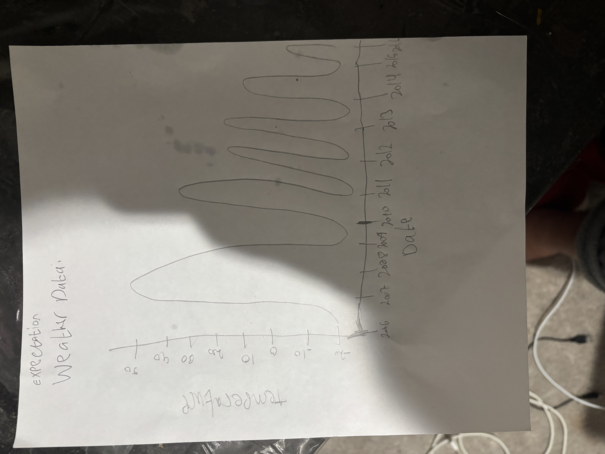

Weather Visualization – Final Project Documentation
Abdullah Siddiqui - VISUALIZING INFORMATION/NEWM-N328 - May 1, 2025
This document details the design and implementation of the interactive weather visualization project. The goal was to explore historical weather data using D3.js and create an effective interface for understanding temperature trends.
View the Live Visualization: Weather Trends Visualization
1. Project Goal & Dataset
The primary goal of this project was to build an interactive visualization using D3.js to explore weather patterns over a significant period. I aimed to move beyond static charts and incorporate features allowing user-driven exploration.
The dataset used is the "Historical Hourly Weather Data 2006-2016" available on Kaggle: Kaggle Weather Dataset. This rich dataset contains over 96,000 hourly records with attributes like temperature, apparent temperature, humidity, wind speed, visibility, pressure, and precipitation type.
Given the large size and hourly granularity, plotting raw data directly is impractical for web performance. Therefore, a key step involved **aggregating the data into daily averages**. This approach retains the long-term trends while significantly improving visualization performance. The primary attributes visualized are:
- Date: Aggregated to the daily level.
- Average Temperature (°C): The mean daily temperature.
- Average Apparent Temperature (°C): The mean daily 'feels like' temperature.
- Average Humidity: The mean daily humidity level (shown in tooltips).
2. Design Process & Iterations
Initial Questions & Ideas
I started with several questions about the dataset:
- How does the average daily temperature change over the 10-year period?
- Are there noticeable differences between the actual average temperature and the average apparent ('feels like') temperature? When are these differences most pronounced?
- Can typical seasonal patterns be clearly observed? Are there any anomalous years or periods?
- How could interactivity help in exploring specific time ranges or data points?
To visualize this, I first sketched a basic line chart showing temperature against time, based on my initial thoughts about how the data might look. This sketch, shown below, helped solidify the basic layout before coding.

Development Iterations
The development process involved several iterations:
- Basic Line Chart (Hourly Data): My first attempt tried plotting the hourly temperature data directly. While functional, it was extremely slow in the browser and the line appeared very noisy, making long-term trends hard to see.
- Aggregation to Daily Averages: Recognizing the performance bottleneck and noise, I implemented data aggregation in JavaScript (using
d3.groupandd3.mean) to calculate daily averages. This dramatically improved performance and clarity. - Adding Apparent Temperature: To address my second question, I added a second line representing the average apparent temperature, using a different color (orange) and style (dashed) for distinction, along with a legend.
- Implementing Interactivity (Tooltips): To allow users to see precise values, I added interactive tooltips that appear on hover, showing the date, average temperature, average apparent temperature, and average humidity for the closest day. This involved using
d3.bisectorto find the data point and dynamically updating a tooltipdiv. - Implementing Interactivity (Zoom & Pan): To enable exploration of specific time periods, I integrated D3's zoom behavior (
d3.zoom). This allows users to zoom in/out using the scroll wheel and pan by dragging, dynamically updating the X-axis and the line paths. A double-click resets the zoom. - Refinements: Final touches included adding axis labels, refining the chart title, improving styling (CSS), adding robust error handling, and ensuring responsiveness of interactive elements.
3. Design Rationale
Several design choices were made to enhance clarity and usability:
- Line Chart: This chart type is ideal for showing trends over a continuous variable like time.
- Daily Aggregation: Chosen for performance and to smooth out hourly noise, making seasonal and yearly trends more apparent.
- Dual Lines (Temp vs. Apparent Temp): Directly comparing these two values addresses a key question. Using distinct colors (blue/orange) and a dashed style for apparent temperature aids visual differentiation. A legend clarifies which line is which.
- Tooltips on Hover: Provides detailed information (exact date, temps, humidity) on demand without cluttering the main visualization. They follow the cursor for intuitive use.
- Zoom and Pan: Empowers users to explore the data at different scales, from the overall 10-year trend down to specific months or seasons. This is crucial for discovering finer patterns or investigating anomalies.
- Clean Styling: A minimalist aesthetic with clear axes, labels, and appropriate margins focuses attention on the data itself. Subtle grid lines (via tick lines) aid value reading without being distracting.
- Color Choices: Steel blue and orange offer good contrast against the white background and are generally distinguishable.
4. Discoveries & Findings (Using the Visualization)
Interacting with the visualization revealed several interesting patterns:
- Clear Seasonality: The expected yearly cycle of temperature rise and fall is immediately obvious across the entire decade.
- Apparent Temperature Deviations: Using the tooltips and zooming, I observed that during winter months (e.g., Jan/Feb), the average apparent temperature is frequently several degrees lower than the actual average temperature, likely due to wind chill effects factored into its calculation. Conversely, in humid summer months, the apparent temperature can sometimes be higher than the actual temperature.
- Specific Period Analysis: By zooming into the year 2012, it's possible to observe the warmer-than-average spring and hot summer experienced in many regions that year. Hovering over specific peaks reveals the maximum daily average temperatures reached.
- Humidity Correlation (via Tooltip): While not plotted directly, the tooltip reveals daily average humidity. Exploring periods of high apparent temperature often coincided with high humidity values, as expected.
Visual Evidence
The following screenshots illustrate some of these findings:


5. Technology Used
- D3.js (v7): The core JavaScript library for data manipulation, SVG rendering, scales, axes, line generation, and interactive behaviors (zoom, tooltips using bisector).
- HTML5: Structure for the web page (
index.html) and documentation (docs.html). - CSS3: Styling for the page layout, chart elements (axes, lines), tooltip appearance, and overall aesthetics.
- JavaScript (ES6+): For data loading (
d3.csv), parsing, aggregation logic, and coordinating D3 modules.
6. Video Demonstration
A short video demonstrating the interactive features (hovering, zooming, panning) and discussing the findings mentioned above is embedded below.
7. Challenges & Future Improvements
One challenge was parsing the specific date format in the CSV reliably. Handling missing or invalid data during aggregation (especially for apparent temperature and humidity) also required careful filtering. Implementing the zoom behavior correctly alongside the tooltip required managing coordinate systems (original vs. transformed scales).
Future improvements could include:
- Adding brushing on a smaller context chart below the main chart for more intuitive range selection.
- Implementing linked views, such as a scatter plot showing Temperature vs. Humidity that updates based on the selected time range.
- Allowing users to toggle the visibility of the temperature/apparent temperature lines.
- Exploring different aggregation levels (e.g., weekly, monthly) selectable by the user.
8. Final Thoughts
This project was an excellent hands-on experience in applying D3.js to a real-world dataset. Moving from a static chart to an interactive one significantly enhances the potential for data exploration and discovery. The process highlighted the importance of data preprocessing (aggregation) for performance and the iterative nature of visualization design. I feel much more comfortable implementing complex interactive features like linked tooltips and zooming/panning in D3.